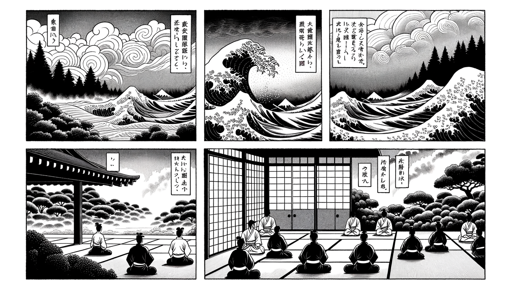

十二巻 巻一覧
正法眼藏第6 歸依佛法僧寶
本紹介ページの導入・語彙・深掘り・クイズは tools/regen_volume_intro_from_corpus.py が OpenAI API で生成したものです（入力は当巻の原文からの短い抜粋のみ）。内容はモデル出力のため、重要箇所は必ず原文・教本と照合してください。
出典: https://shomonji.or.jp/zazen/doc/genzou.html
原文・現代語訳の全文は 全文ページを参照してください。
この巻の紹介（導入）
禪苑淸規曰、敬佛法僧否（佛法僧を敬ふや否や）。一百二十門第一あきらかにしりぬ、西天東土、佛祖正傳するところは、恭敬佛法僧なり。
歸依せざれば恭敬せず、恭敬せざれば歸依すべからず。この歸依佛法僧の功徳、かならず感應道交するとき成就するなり。
語彙の足場
- 歸依：仏教において、仏、法、僧の三宝に帰依することを指す。これは信仰の根本であり、信者が仏教の教えを受け入れ、実践することを意味する。
- 三宝：仏教の中心的な存在である仏（釈迦）、法（教え）、僧（修行者の集団）を指す。信者はこの三宝に帰依し、教えを守ることで功徳を積むとされる。
- 功徳：善行や信仰によって得られる良い結果や利益を指す。仏教では、功徳を積むことが重要視され、特に三宝に帰依することで得られる功徳は特別なものとされる。
- 感應道交：信者が仏や菩薩に対して敬意を表し、心を通わせることを指す。これは信者と仏の間に生じる精神的な交流や影響を意味する。
- 阿耨多羅三藐三菩提：究極の悟りを指す仏教用語で、完全な覚醒の状態を表す。信者はこの境地を目指して修行を行う。
原文（要点の抜粋）
当巻の冒頭付近からの短い抜粋です。長い引用は載せていません。 全文は全文ページを参照してください。出典はリポジトリ内 doc/正法眼蔵.txt です。原文の参照元: https://shomonji.or.jp/zazen/doc/genzou.html
禪苑淸規曰、敬佛法僧否（佛法僧を敬ふや否や）。一百二十門第一
あきらかにしりぬ、西天東土、佛祖正傳するところは、恭敬佛法僧なり。歸依せざれば恭敬せず、恭敬せざれば歸依すべからず。この歸依佛法僧の功徳、かならず感應道交するとき成就するなり。たとひ天上人間、地獄鬼畜なりといへども、感應道交すれば、かならず歸依したてまつるなり。すでに歸依したてまつるがごときは、世世生生、在在處處に増長し、かならず積功累徳し、阿耨多羅三藐三菩提を成就するなり。おのづから惡友にひかれ、魔障にあふて、しばらく斷善根となり、一闡提となれども、つひには續善根し、その功徳増長するなり。歸依三寶の功徳、つひに不朽なり。
その歸依三寶とは、まさに淨信をもはらにして、あるいは如來現在世にもあれ、あるいは如來滅後にもあれ、合掌し低頭して、口にとなへていはく、
我某甲、今身より佛身にいたるまで、
歸依佛、歸依法、歸依僧。
歸依佛兩足尊、歸依法離欲尊、歸依僧衆中尊。
歸依佛竟、歸依法竟、歸依僧竟。
はるかに佛果菩提をこころざして、かくのごとく僧那を始發するなり。しかあればすなはち、身心いまも刹那刹那に生滅すといへども、法身かならず長養して、菩提を成就するなり。
いはゆる歸依とは、歸は歸投なり、依は依伏なり。このゆゑに歸依といふ。歸依の相は、たとへば子の父に歸するがごとし。依伏は、たとへば民の王に依するがごとし。いはゆる救濟の言なり。佛はこれ大師なるがゆゑに歸依す、法は良藥なるがゆゑに歸依す、僧は勝友なるがゆゑに歸依す。
問、何故、偏歸此三（何が故にか偏に此の三に歸するや）。
答、以此三種畢竟歸處、能令衆生出離生死、證大菩提故歸（此の三種は畢竟歸處にして、能く衆生をして生死を出離し、大菩提を證せしむるを以ての故に歸す）。
此三、畢竟不可思議功徳なり。
図解（4コマ・AI生成）
教義の根拠は原文・出典に従い、漫画は比喩の補助に留めてください。

深掘り（読解の手掛かり）
- 帰依は仏教の信仰の基本であり、三宝に帰依することで信者は仏教の教えを受け入れる。
- 三宝は仏教の中心的存在であり、信者はこれに帰依することで功徳を積むことができる。
- 感應道交は信者と仏の間の精神的な交流を示し、帰依の行為が重要な役割を果たす。
確認（形成評価）
各設問の下の「採点」で正誤を表示します（ブラウザ内のみ。ログは送りません）。